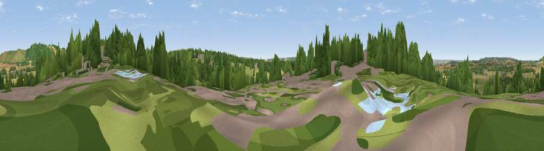

Viewpoint near Devizes
#41534 in England · top 89% of its area beats it · near Devizes · access?Where it is
The exact computed spot (ST 99375 61525). Click the marker for map links.
Public access: no public right of way or access land is recorded at this exact spot — it may be on private land. Computed from Natural England's CRoW access layer and OpenStreetMap rights of way — not the legal definitive map. Always verify locally.
The view, rendered

A 360° render of this exact spot computed from the terrain model, tree cover and land cover — summer colours, afternoon light, calibrated against photographs of famous viewpoints. Real trees, hedges and buildings will differ in detail.
The panorama
Grey silhouette: terrain skyline in each direction (720 bearings, Earth curvature and refraction included). Dashed green: skyline with trees (+15 m) and buildings (+8 m) as obstacles. Blue strip: how far the ground is visible on each bearing.
Where the view opens
Wedge length = distance to the farthest visible ground on that bearing (vegetation-aware). Rings at 10, 25 and 50 km.
What fills the view
39% grassland · 29% woodland · 23% cropland · 9% built-up
Angular shares of the visible panorama (visual magnitude), not map area. Landscape diversity 0.56 (0–1 Shannon).
Key numbers
More beautiful places nearby
The staircase of upgrades: each row has a higher view potential than everything closer. Driving times are estimates from straight-line distance, calibrated against real road routing — check an actual route before setting out.
| Place | Direction | Drive | Score |
|---|---|---|---|
| Viewpoint near Devizes | ENE · 1 km | ~2 min | 24.5 |
| Viewpoint near Rowde | WSW · 1 km | ~2 min | 28.1 |
| Viewpoint near Potterne | SSW · 2 km | ~5 min | 34.3 |
| Viewpoint near Devizes | NNE · 3 km | ~7 min | 70.8 |
| Viewpoint near Heddington | NNE · 3 km | ~7 min | 72.1 |
| Viewpoint near Heddington | NNE · 3 km | ~8 min | 73.0 |
| King's Play Hill | NNE · 5 km | ~11 min | 73.9 |
| Morgan's Hill | NE · 6 km | ~14 min | 74.3 |
51.35280, -2.01036 · source: screening · position refined by local search. Computed location — check access rights before visiting.